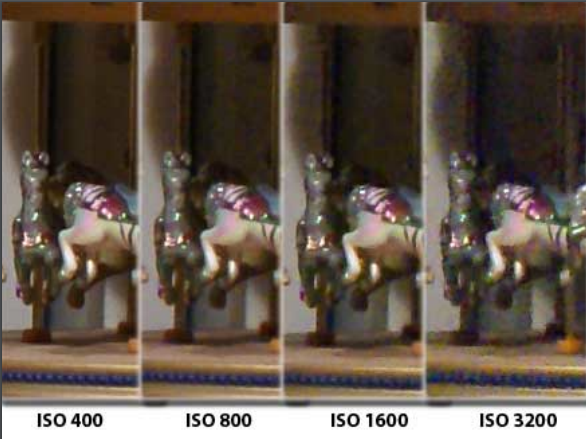
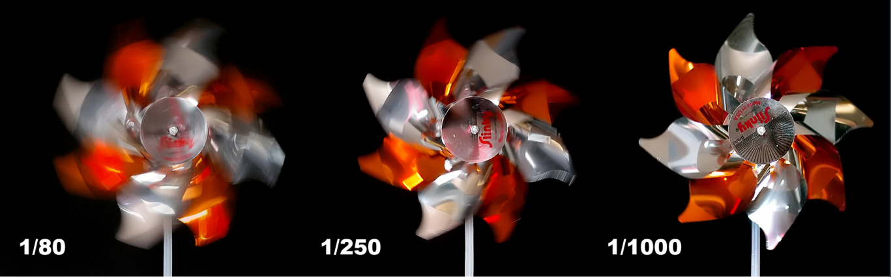
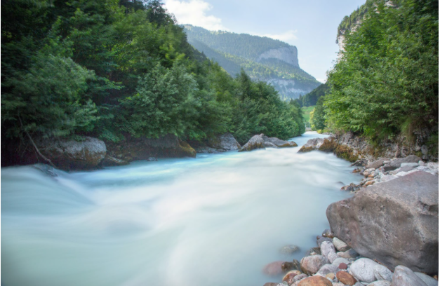
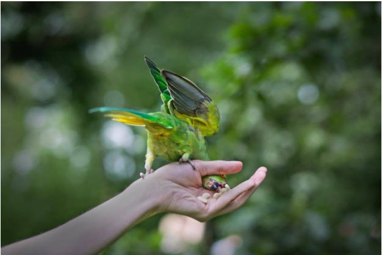

På denne side vil jeg komme ind på det grundlæggende og de vigtigeste værktøjer omkring fotografering
Når man fotografer så er der 3 ting man skal være særlig opmærksom på når man tager et billede. Der findes tre teknikker der skal være i balance for at tage det perfekte billede som er:
ISO
lukketid
Blænde
Iso er en værdi der angiver lysfølsomheden for et kamera, det kan være for eksempel at en ISO på 100 resultere i en lav følsomhed hvor en høj ISO på f.eks. På 3200 udgiver en høj lysfølsomhed. En høj ISO værdi gør det muligt at kunne tage et billede med en kortere lukketid i dårlig belysning men billedet bliver så mere grynet på grund af billedstøj.
Lukketid/eksponering defineres på den måde hvor lang tid dit kamera vil lukke lys fra omgivelserne inden billedet bliver taget.
Hvis lukketiden bliver sat på feks. 10 sekunder så vil kameraet tage lys ind i 10 sekunder før billeder bliver taget. Lukketiden kan sættes på 1/320 hvilket betyder at kameraet vil modtage lys 1/320 sekund. Lukketiden kalder man også for eksponering, da man eksponere kameraet for lys. I de fleste kameraer kan man sætte lukketiden imellem 1/4000 altså 30 sekunder.
Blænde
Når lukketiden styre hvor meget lys der bliver lukket ind i dit kamera inden billedet bliver taget så styre Blænden hvor meget og hvordan lyset kommer ind igennem dit objektiv.
Med et lille blændetal (f/2) så kaldes det for en stor blændeåbning da der kommer meget lys igennem dit objektiv og når der er en stort blændetal (f/22) så kommer der lidt lys gennem dit objektiv. Blændetal har rigtig stor betydning for de billeder du tager da det også betydning for din dybdeskarphed som bliver brugt rigtig meget som også et kreativt værktøj.

(http://simonpratleyphotography.com/exposure-triangle-part-2-aperture/)
eksemple på billede med lang lukketid
Eksemple på hurtig lukketid
De forskellige indstillinger på et kamera:
• Manuel (M): Manuel indstilling af både blænde og lukkertid
• Tidsforvalg (Tv): Du indstiller lukkertiden, og kameraet beregner blænde
• Blændeforvalg (Av): Du indstiller blænde, og kameraet beregner lukkertiden
• Program (P): Kameraet forsøger at balancere blænde og lukkertid - et kompromis uden din
medvirken
• Undgå den grønne, da du risikerer at flashen anvendes automatisk
• Øvrige programmer: Forskellige “shooting modes” hvor programmet er optimeret til en bestemt type billeder, men hvor du som fotograf ikke har kontrol - vi anvender dem ikke